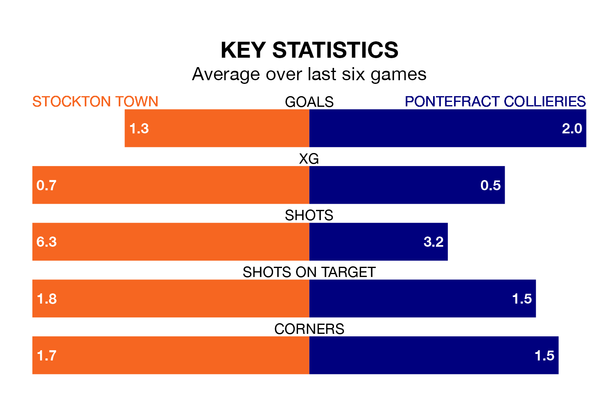

Saturday's match between Stockton Town and Pontefract Collieries promises to be one for the neutrals, as two of the Northern Premier League Division One East's most free-scoring sides go head-to-head.
Ahead of the game, Stockton and Pontefract Collieries sit top and third in the goal-scoring charts, with 50 and 41 goals respectively.
Stockton are top of the table after 23 games, of which they have won 14 and drawn six, earning 48 points.
Pontefract Collieries are six places behind Town in seventh, with 11 wins and five draws putting them on 38 points.
In the last 10 years, Stockton and Pontefract Collieries have played each other on seven occasions. Stockton won two of them and Pontefract Collieries five.
On average, Stockton scored 1.6 goals and Pontefract Collieries 2.0 in those matches.
Their last meeting was on September 16, when Pontefract Collieries won 2-0 at home.
The hosts are in mixed form in the Northern Premier League Division One East, with two wins and four draws from their last six games.
With three wins and two draws over that period, the away side's form is slightly better – they have taken 11 points from 18, compared to Stockton's 10.
Stockton's last match was on January 27, a 0-0 draw against Dunston UTS.
Pontefract Collieries beat Liversedge 1-0 last time out, also on January 27.
Updated: 10:40 (UTC), 01/02/24